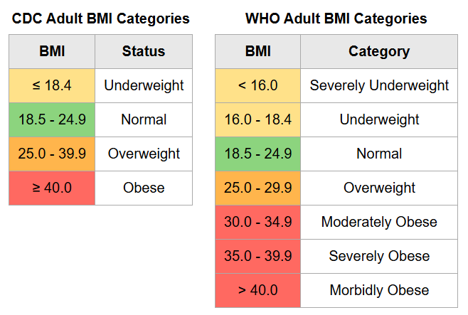

Result
BMI = ?
BMI = ?
BMI = ?
The BMI Calculator finds the body mass index given weight and height. Calculate your BMI and find the BMI weight category for your height. The calculator also finds the normal weight range given your height. Calculate BMI with weight in pounds, stones or kilograms. Enter height in inches, feet and inches, meters or centimeters.
BMI Formulas Divide weight by height squared to find BMI. Note that you need to use kg and meters the standard units for the BMI formula are kg and meters. If you need other units of measure the calculator will convert among units for you. In metric units, using kg and meters: BMI= weight in kg height2 in m BMI = weight ÷ height2 In metric units: BMI = weight (kg) ÷ height2 (meters) In US units: BMI = weight (lb) ÷ height2 (inches) * 703 See additional BMI formulas below for accurate calculations in metric or imperial units.
What is BMI? The body mass index or BMI is a ratio of mass to height. It is calculated as kg per square meter or pounds per square inch of height. Numeric BMI values correspond to weight categories including underweight, normal, overweight and obese. BMI is used as an indicator of the relative healthiness of a person. The Centers for Disease Control (CDC) and the World Health Organization (WHO) recognize that people who are overweight or underweight are at higher risk for certain health conditions. BMI also enables health professionals to discuss bodyweight objectively with their patients.
